Целью данной работы является приобретение практических навыков по настройке удалённого доступа к серверу с помощью SSH.
На сервере зададим пароль для пользователя root (рис. @fig-1):
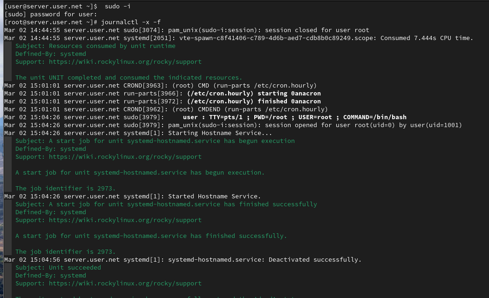
На сервере в дополнительном терминале запустим мониторинг системных событий (рис. @fig-2):
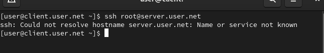
С клиента попытаемся получить доступ к серверу посредством SSH-соединения через пользователя root (рис. @fig-3):
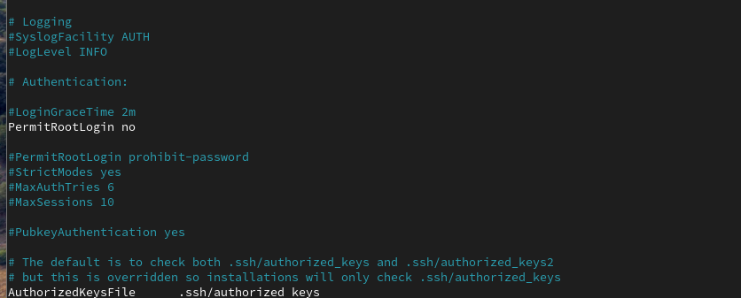
На сервере откроем файл /etc/ssh/sshd_config для редактирования и запретим вход на сервер пользователю root (рис. @fig-4):
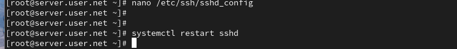
После сохранения изменений перезапустим sshd (рис. @fig-5):
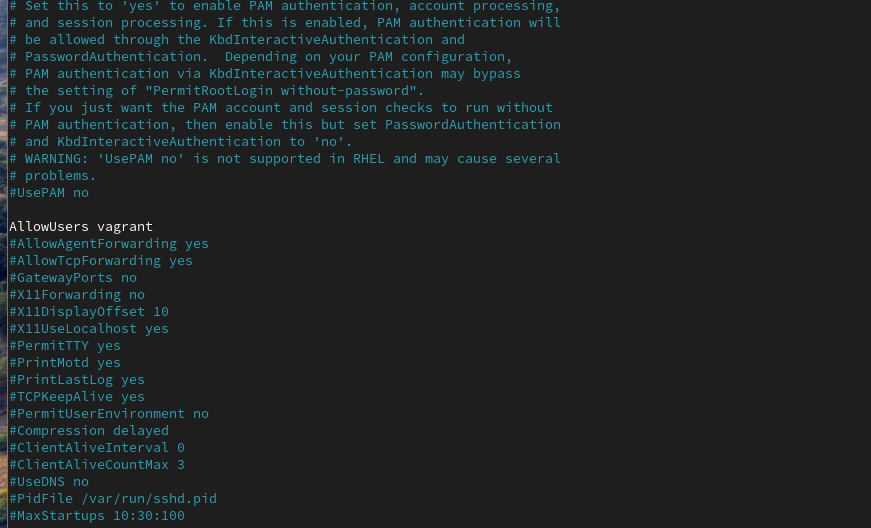
На сервере откроем файл /etc/ssh/sshd_config и добавим строку AllowUsers vagrant, затем перезапустим sshd (рис. @fig-6, @fig-7):
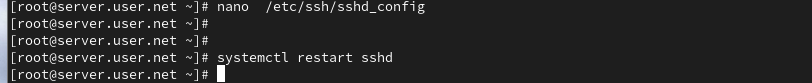
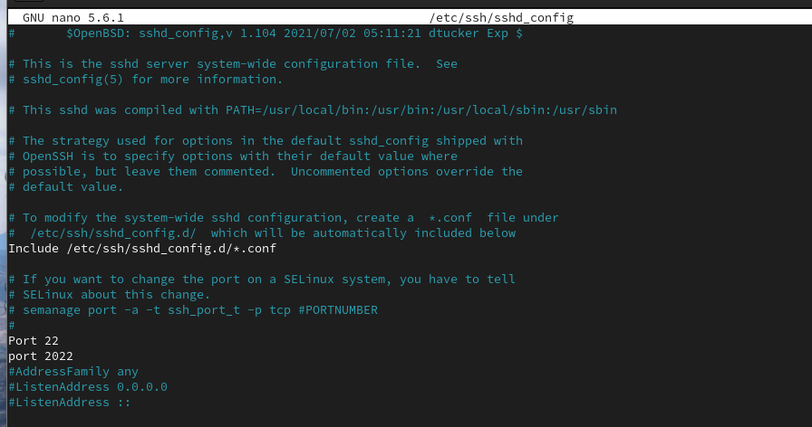
Внесём изменение в файл /etc/ssh/sshd_config, добавив пользователя user в AllowUsers, и перезапустим sshd (рис. @fig-8, @fig-9):
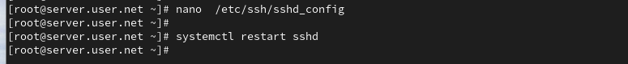
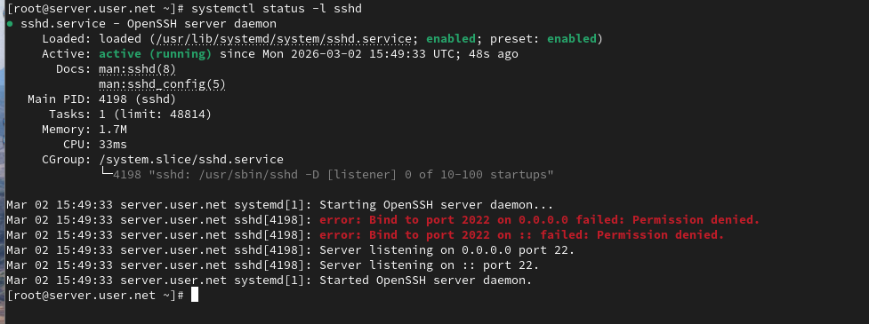
В файле /etc/ssh/sshd_config добавим второй порт 2022, перезапустим sshd и проверим статус (рис. @fig-10, @fig-11):
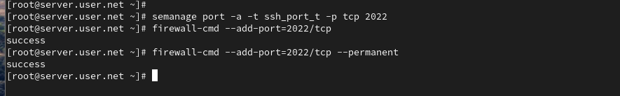
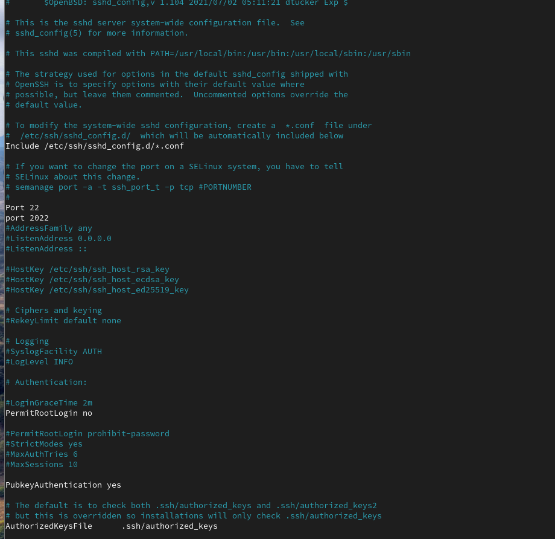
Исправим метки SELinux для порта 2022 и откроем порт в межсетевом экране, затем перезапустим sshd (рис. @fig-12):
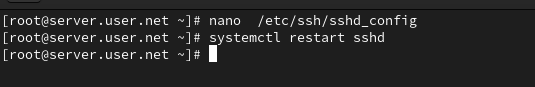
С клиента подключимся к серверу через порт 2022 и получим доступ root (рис. @fig-13):
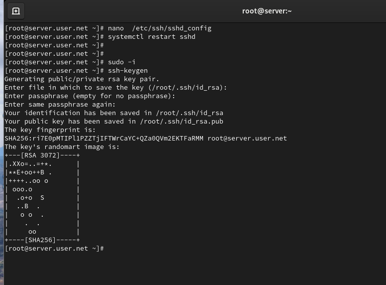
На сервере разрешим аутентификацию по ключу и перезапустим sshd (рис. @fig-14):
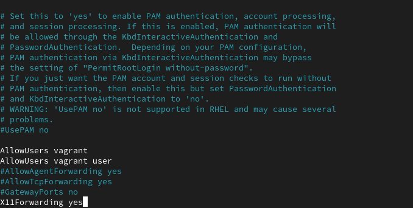
На клиенте сформируем SSH-ключ и скопируем его на сервер (рис. @fig-15):
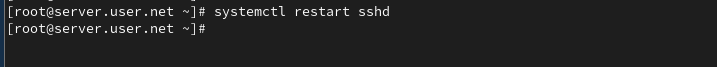
На клиенте перенаправим порт 80 на сервере на порт 8080 локально и проверим запущенные службы (рис. @fig-16):
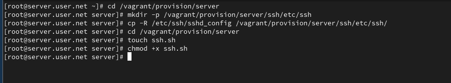
На сервере разрешим отображение графических интерфейсов X11 и перезапустим sshd (рис. @fig-17):
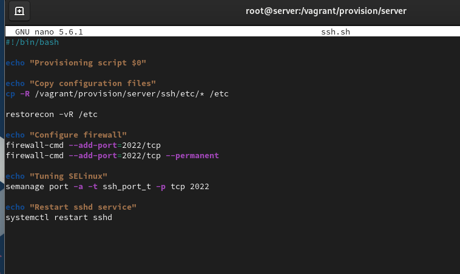
В ходе выполнения лабораторной работы были приобретены практические навыки по настройке удалённого доступа к серверу с помощью SSH.